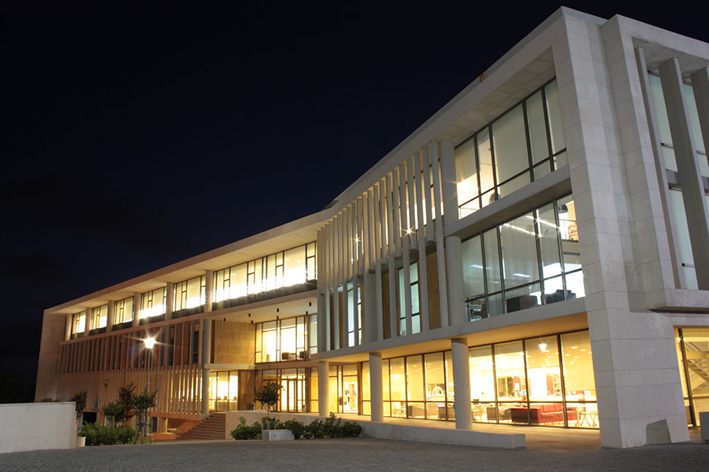
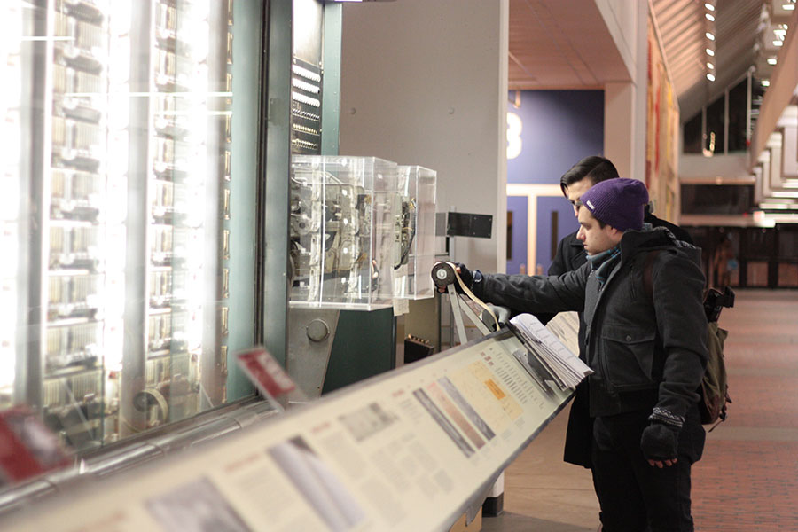

history
Born in Boston, raised in Dubai, I found myself moving to Lebanon to live with
my sister at 15. I had already changed schools multiple times by then,
and was craving another change. Three years later, and here I am back where I started.
education
After graduating from a high school in a rural Lebanese town, I attended
University of Balamand for a year as a mandatory undeclared major. I kept
telling myself I didn't want to major in anything scientific the following year,
despite the fact that I had higher scores in my science courses. I wanted to be
involved in art: interior design, industrial design, photography, anything...
But I finally decided to work my strengths, and am very glad I did.

currently
Today I am a Computer Science major at Framingham State University, hoping
to work towards a minor in Physics as well. I had hardly any programming experience
before starting the program, and have an eternity of self-teaching ahead of me.
This summer, I am interning as a Software Engineer at Rocket Software, Inc.
where I have taken on a challenging project that I hope to complete by fall.
